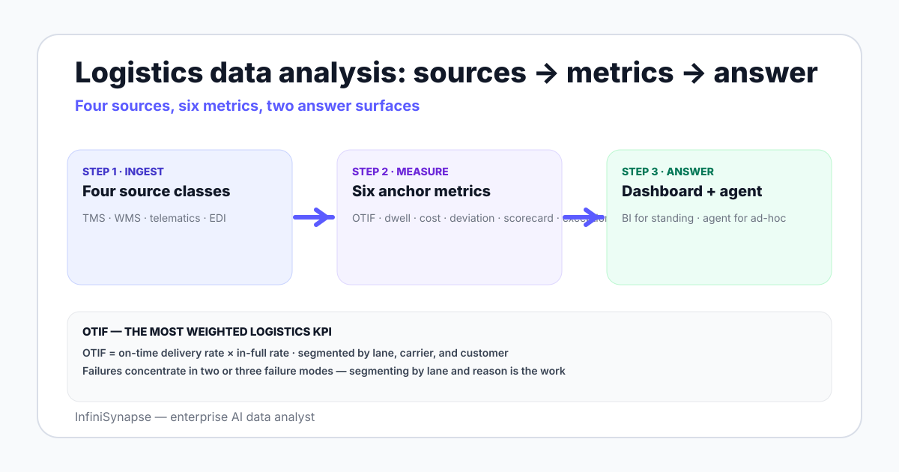

Data Analysis in Logistics in 2026: Methods, Sources, and AI
Data analysis in logistics in 2026 — OTIF, dwell, cost per shipment, carrier scorecards, TMS/WMS/telematics sources, and where AI data agents change workflow.
AuthorInfiniSynapse Research, product and data architecture team
Published2026-06-28 · Last verified 2026-06-28 · Next review 2026-09-28
Evidence baseTMS and WMS vendor documentation, telematics platform references (Samsara, Geotab), DCSA EDI standards, public logistics analytics studies, and field experience across 3PL and shipper data teams.
Disclosure: This page is published by InfiniSynapse, an AI data analyst used by some logistics and supply chain teams. The methods, metric tree, and tool ladder apply regardless of which analytics platform you pick.
TL;DR
Logistics data analysis combines TMS (transportation management system), WMS (warehouse management system), telematics, and EDI message data to answer recurring questions about on-time performance, cost, and carrier quality.
Six metrics anchor most weekly work: OTIF (on-time, in-full), dwell time, cost per shipment, route deviation, carrier scorecard, and exception rate.
OTIF decomposes into on-time delivery rate × in-full rate; the failures concentrate by lane, carrier, and shipper-of-record — segmenting the failure mode is the analytical work.
Tooling runs from TMS-native dashboards to a warehouse plus BI plus dbt, with AI data agents now handling ad-hoc anomaly investigation on top.
AI agents help with three recurring patterns: dwell-time spike triage, carrier scorecard root cause analysis, and what-if questions across lanes and carriers.
Logistics data analysis combines TMS, WMS, telematics, and EDI data to track six anchor metrics — OTIF, dwell time, cost per shipment, route deviation, carrier scorecard, exception rate — and answer recurring questions about on-time performance, cost, and carrier quality. Tooling runs from TMS dashboards to a warehouse-plus-BI stack, with AI agents handling ad-hoc anomaly triage on top.

The four source classes a logistics stack pulls from
Transportation Management System (TMS). Oracle TMS, Blue Yonder, MercuryGate, FreightPath, Project44 (visibility), Shipwell. Loads, shipments, lanes, carriers, costs.
Warehouse Management System (WMS). Manhattan, SAP EWM, HighJump, Fishbowl. Inbound, outbound, putaway, picking, packing, dock-to-stock time.
EDI message data. 204 (load tender), 214 (carrier status), 210 (invoice), 856 (advance ship notice), 990 (response to tender). The communication layer between shippers, carriers, and 3PLs.
The warehouse — Snowflake, BigQuery, Redshift, or Postgres data warehouse — is where these four land via ELT and are modeled together. Without that, every question becomes a cross-system query the team writes by hand.
The six metrics that anchor most weekly work
Metric
Definition
Primary source
OTIF
On-time delivery rate × in-full rate, by lane and customer
TMS + EDI 214 + EDI 210
Dwell time
Time at origin or destination beyond the appointment window
Telematics + TMS appointment
Cost per shipment
Total cost (line haul + accessorials + fuel) per shipment, by lane
Most weekly work is repeating these six segmentations along lane, carrier, customer, and time. The remaining work is investigating drift in any of the six.
OTIF — the underlying decomposition
OTIF is the most weighted logistics KPI for shippers because retailers penalize it directly. The decomposition is simple but the analytical work concentrates in the failure modes:
OTIF = on-time delivery rate × in-full rate
on-time delivery rate = shipments delivered within delivery window / total shipments
in-full rate = shipments delivered with full quantity / total shipments
Two SQL examples on a typical schema:
-- On-time delivery rate by carrier, last 4 weeks
SELECT carrier_id,
COUNT(*) AS shipments,
SUM(CASE WHEN actual_delivery <= delivery_window_end THEN 1 ELSE 0 END) * 1.0 / COUNT(*) AS on_time_rate
FROM shipments
WHERE pickup_date >= CURRENT_DATE - INTERVAL '28 day'
GROUP BY carrier_id
ORDER BY on_time_rate DESC;
-- In-full failure top causes, last 4 weeks
SELECT failure_reason, COUNT(*) AS occurrences
FROM shipment_exceptions
WHERE exception_type = 'short_shipment'
AND pickup_date >= CURRENT_DATE - INTERVAL '28 day'
GROUP BY failure_reason
ORDER BY occurrences DESC
LIMIT 10;
The analytical pattern is the same across logistics metrics: a top-line rate, a segmentation by carrier or lane, and a drill into failure reasons. See the PostgreSQL data analysis tools guide for the dialect-specific syntax on date arithmetic.
Three weekly questions and how the answer comes together
1. "Why did dwell time spike at the Atlanta DC on Wednesday?"
The dashboard shows the spike. The analyst joins telematics (when trucks arrived) to TMS appointments (when they were scheduled) to WMS receiving events (when actually unloaded). The driver of the spike is usually one of: missed appointment, dock-door congestion, labor shortfall on receiving. The output is a ranked list of candidate causes with the underlying SQL.
2. "Which carriers are getting worse this quarter?"
Carrier scorecard, last 90 days vs prior 90 days, delta on OTIF, claims rate, cost variance, tender acceptance. The carriers with the biggest negative delta on two or more dimensions are the ones to renegotiate or remove.
3. "What is the cost-to-serve for our top 10 customers?"
Cost per shipment × shipments per period × customer, plus accessorial charges allocated by customer. Combined with revenue per customer and gross margin, this surfaces customers where the freight cost exceeds the contribution.
Tool ladder for logistics analytics
Rung
Stack
When you stay
When you graduate
1
TMS-native dashboards + Excel
Small fleet, single carrier
Cross-system questions become weekly
2
Warehouse + ELT (TMS + WMS) + BI
3PL or shipper with 3–10 carriers and dozens of lanes
Operations managers need on-demand answers without analyst tickets
4
Stack 3 + AI data agent
Open-ended questions on cost-to-serve, lane mix, carrier risk
—
Where AI data agents earn the seat in logistics analytics
Three patterns where an AI data analyst changes the workflow:
Dwell-time spike triage. When dwell spikes at a DC, the agent decomposes by dock door, shift, carrier, appointment vs walk-in, and returns the candidates with the SQL it ran. 20 minutes instead of half a day.
Carrier scorecard deep dive. A scorecard panel shows a carrier slipping. The agent joins TMS + EDI + telematics, returns the lane-level breakdown, and identifies whether the slip is concentrated in two lanes or general. This is the input to the next negotiation.
Cost-to-serve and customer questions. Letting the operations analyst translate questions into BI tickets. The "I just need to check one thing" question pile is the highest-yield place to add an AI data agent — the alternative is a five-day BI ticket cycle.
The pattern is the same as other domains: dashboards answer the standing 80%, the agent answers the ad-hoc 20%. See AI database query for the connection setup and database + knowledge base binding for why a bound business glossary matters in logistics where carrier and lane definitions vary by customer.
Logistics analysis is a join problem. The agent earns its seat by handling joins across TMS, WMS, telematics, and EDI without an analyst writing each one by hand.
Ask an open-ended logistics question across your warehouse
Connect Snowflake, BigQuery, Postgres, or another warehouse where your TMS, WMS, telematics, and EDI feeds land. Seed a small business glossary — what counts as an exception, which appointment window applies. Then ask one question the dashboard does not answer.
Data analysis in logistics is the practice of combining transportation management system data, warehouse management system data, telematics feeds, and EDI message data to track on-time performance, cost, carrier quality, and operational exceptions. The work centers on a small set of anchor metrics — OTIF, dwell time, cost per shipment, route deviation, carrier scorecard, and exception rate — that are segmented across lanes, carriers, and customers.
What data sources do logistics teams analyze?
Four source classes: transportation management systems like Oracle TMS, Blue Yonder, MercuryGate, FreightPath, Project44, or Shipwell; warehouse management systems like Manhattan, SAP EWM, HighJump, or Fishbowl; telematics platforms like Samsara, Geotab, or Motive; and EDI message data including the 204 load tender, 214 carrier status, 210 invoice, 856 advance ship notice, and 990 response to tender. The warehouse is the reconciled layer.
What is OTIF in logistics analytics?
OTIF stands for on-time, in-full and is the most weighted logistics KPI for shippers because major retailers penalize it directly through chargebacks. OTIF decomposes into the on-time delivery rate (shipments delivered within the agreed window divided by total shipments) multiplied by the in-full rate (shipments delivered with the full ordered quantity divided by total shipments). The analytical work concentrates in the failure modes by lane, carrier, and customer.
What metrics do logistics data teams track weekly?
Six metrics anchor most weekly work: OTIF, dwell time, cost per shipment, route deviation, carrier scorecard, and exception rate. Each is segmented across lanes, carriers, customers, and time windows. The remaining analytical time goes to investigating drift in any of the six — for example, a dwell-time spike at a specific distribution center on a specific day, or a carrier scorecard slipping over the last 90 days.
What tools do logistics teams use for data analysis?
The tool ladder runs from TMS-native dashboards plus Excel for small fleets, to a warehouse plus ELT plus BI for 3PLs and shippers with three to ten carriers, to a full enterprise stack with telematics and EDI integration plus dbt for shippers with twenty or more carriers, with AI data agents now layering on top for ad-hoc anomaly investigation and cross-system queries that span TMS, WMS, telematics, and EDI.
How do AI data agents help logistics data analysis?
Three concrete patterns: dwell-time spike triage where the agent decomposes a spike by dock door, shift, carrier, and appointment in minutes instead of half a day; carrier scorecard deep dives joining TMS, EDI, and telematics to identify whether a carrier slip is concentrated or general; and ad-hoc cost-to-serve questions that operations managers raise without filing a BI ticket. The agent handles the cross-system joins logistics analysis is dominated by.
What are common data analysis examples in logistics?
Examples include dwell-time spike triage at a distribution center, carrier scorecard deep dives over the last 90 days, cost-to-serve analysis for top customers, lane-level OTIF investigation when a retailer chargeback arrives, exception rate trending by EDI 214 status code, route deviation root cause analysis from telematics, and tender acceptance rate trending by carrier. Each example sits under one of the six anchor metrics.
Methodology and review notes
Last updated: 2026-06-28 · Next scheduled review: 2026-09-28
This methods guide synthesizes TMS and WMS vendor documentation, telematics platform references from Samsara and Geotab, DCSA EDI standards, public logistics analytics studies from Gartner and McKinsey, and field experience across operating 3PL and shipper data teams. The six-metric anchor, OTIF decomposition, and tool ladder reflect observed practice across more than a dozen logistics teams.
Conflict of interest: InfiniSynapse publishes this guide and sells an enterprise AI data analyst. To reduce bias, the page leads with the topic itself, treats InfiniSynapse as one option among many, and links to external sources for every numeric claim.
Update cadence: Reviewed every 90 days for accuracy and link health.